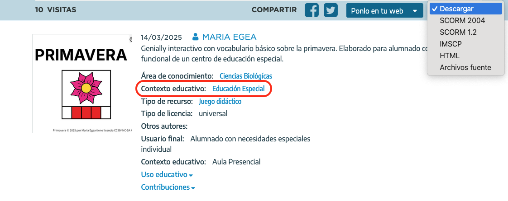
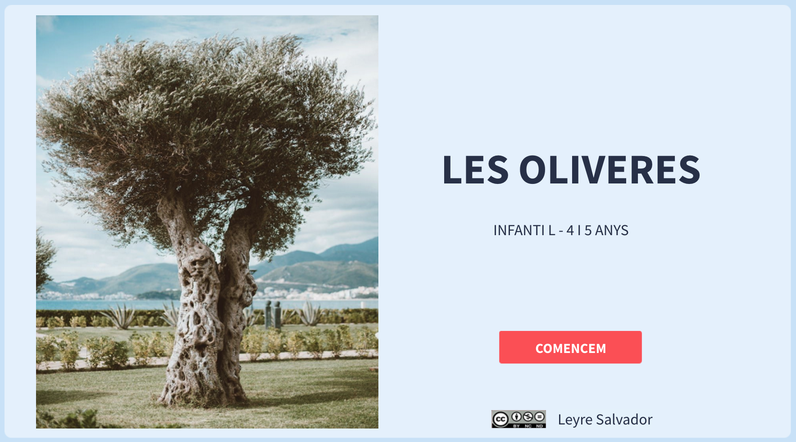
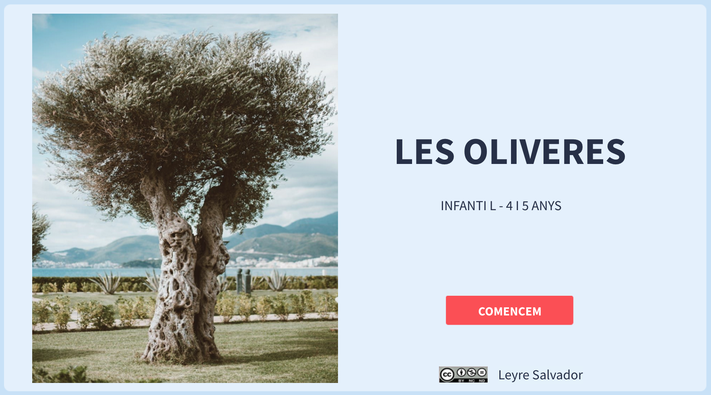

Situacions d'Aprenentatge
Educació Especial
La primavera

Conocemos los ecosistemas
Caja de los cinco sentidos
La caja misteriosa
Un señor con sombrero verde y pantalón marrón
Els colors
Treballem vocabulari de Nadal
Les Oliveres


Llicenciat sota la Llicència Creative Commons Reconeixement CompartirIgual 4.0